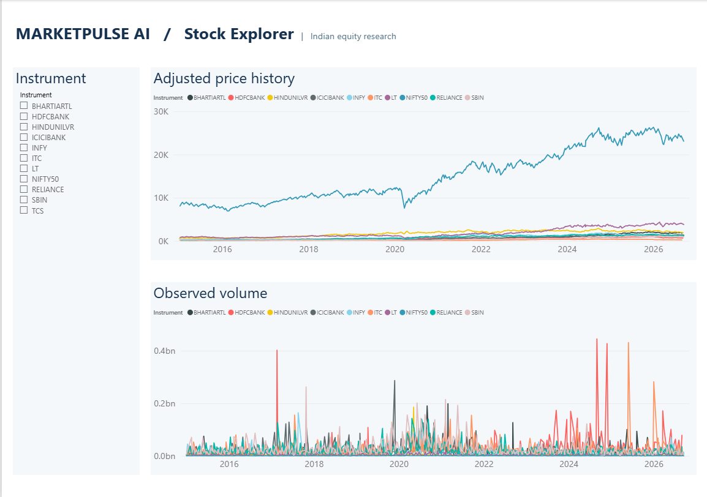

DATA ENGINEERING / RESEARCH
MarketPulse AI Foundation
From market snapshots to traceable analytics and honest model evaluation.
Python · PostgreSQL · Power BI · Scikit-learn
View repository ↗
The problem
Build a repeatable way to collect, validate and analyze Indian-equity data while keeping the provenance of research results clear.
Universe and inputs
The configured initial universe is NIFTY 50 plus ten liquid large-cap stocks. Daily OHLCV research snapshots come from Yahoo Finance. Exchange-session checks identify gaps without inventing missing prices.
Implementation
The source includes archive checksums, 39 technical features, PostgreSQL migrations, performance and drawdown analytics, forecasting evaluation, risk bands and prior-only anomaly detection. A report generator assembles seven Power BI pages.
Research approach
Forecasting tasks cover next-session direction, next-session return and five-session return, evaluated chronologically with purging. The project compares machine-learning candidates against simple baselines rather than assuming a complex model is better.
Results and current evidence
The project documentation reports that the tested ML candidates did not outperform the selected baselines under its predefined criteria. This portfolio review inspected the local source and documentation; it did not rerun database, model or Power BI checks. A supplied Stock Explorer dashboard screenshot is shown above. The underlying data refresh and model evaluation were not rerun for this preview.
Operations and limitations
The pipeline includes atomic publication, last-good-report preservation, health checks and Windows scheduling helpers. Fresh runs require a configured Python environment, PostgreSQL and data access. It is research software, does not place orders, and makes no claim of a trading edge.